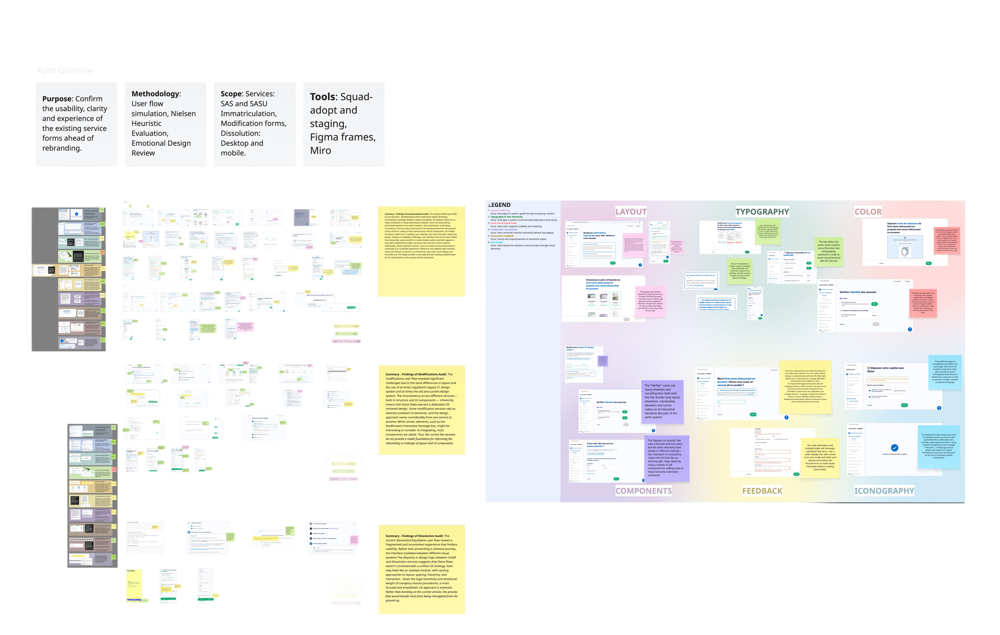
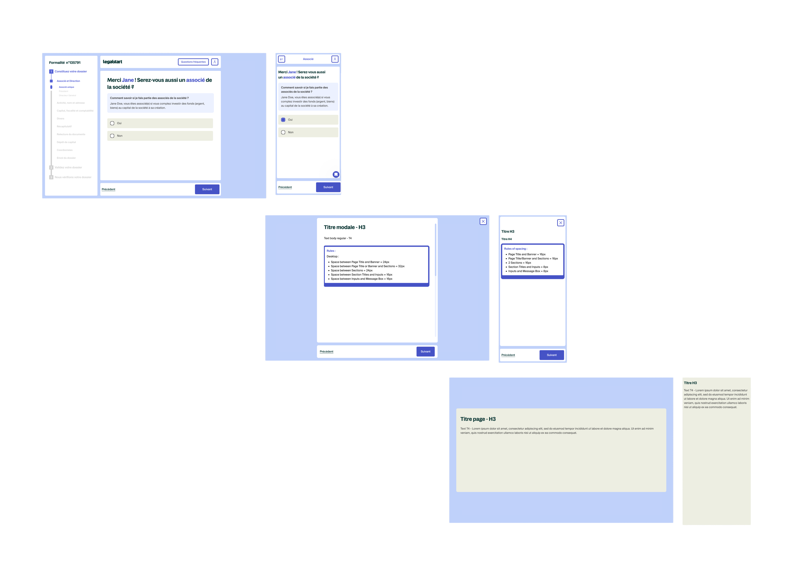

A five month project inside a live LegalTech product: auditing what existed, building what was missing, establishing a system that could scale, and proving it worked through empirical testing.
Legalstart is one of France's leading LegalTech platforms. It helps individuals and businesses create, modify, and dissolve companies entirely online, navigating a legal and administrative system that is genuinely complex. The product had been growing for years, and with that growth came visual and structural debt: components that had drifted apart, layouts that varied between service types, and a visual identity that no longer reflected where the brand was heading.
I joined on a fixed-term contract to lead the rebranding of the core service flows: the multi-step questionnaire journeys that guide users through company creation, modification, and dissolution. The work ran from the initial audit through to a validated, developer-ready redesign.
The brief sounded like a visual refresh. It was not. The service flows handle seven different legal entity types, each with its own branching logic, edge cases, and content. Users are first time entrepreneurs making decisions with real legal and financial consequences. Getting something wrong (a confusing step, a missing instruction, a broken progress indicator) has actual costs for them.
The constraint was just as significant: the product was live and in daily use. Flow logic could not be changed. Amplitude event tracking had to be preserved. Components had to work within an evolving design system that was itself still incomplete. The challenge was not making it look better. It was making it more coherent without breaking what people already relied on.
Understand before touching anything. The first three weeks were pure research: simulating user flows across all three service types, mapping every component in the product against what existed in the design system, and identifying the gap. That gap turned out to be 16 missing components: pieces the service couldn't function without in the new visual language. Before any screen could be redesigned, those had to exist.

Extract from the early audit phase: mapping existing flows, flagging inconsistencies, and cross-referencing the component inventory across service types.
Build the system, not just the screens. With 100+ screens across three service types, designing each one independently would have created the same inconsistency problem a year later. Instead, I designed three layout templates (a main form view, a modal overlay, and a recap screen) that every screen in the service maps to. The rebrand became an application of a system rather than a screen by screen exercise.
Validate before shipping. Rather than relying on internal review alone, I designed and ran a structured user study with 6 participants using think aloud protocol and a CSUQ adapted questionnaire. The goal was evidence, not reassurance: a score I could put in front of the product team and say: this works.

The three layout templates that every screen in the service maps to: main form view, modal overlay, and recap screen.
Amplitude tracking showed that the "Save" button in the header was clicked by only 12% of active users over a two week period. That is not enough usage to justify the space it occupied and the cognitive noise it created. I recommended removing it and replacing it with a short tutorial at the start of the flow explaining that progress saves automatically. The decision was grounded in data, which made the stakeholder conversation straightforward.
The sidebar progress indicator was the one component that appeared on every single screen across all three service types. Getting it wrong would have compounded across the entire product. I spent three weeks on it specifically: benchmarking approaches, testing different states for progress, completion, and error, and iterating until the component communicated system status clearly without competing with the content area. It became the structural anchor of the redesigned layout.
Before the rebrand went live, I ran a full simulation of the flow on the staging environment and documented every discrepancy between what was designed and what was built. Small things: padding off, a state missing, a component using the wrong variant. None were critical individually, but collectively they would have eroded the quality of the release. Finding them at this stage, not in production, was the right place to find them.

Overview of the company registration flow redesign. Some screens partially censored for confidentiality.
The study used three methods in combination: 5 second tests for immediate comprehension, think aloud protocol to surface friction points during navigation, and a CSUQ adapted questionnaire to score usability across six dimensions. Six participants were recruited externally: first time entrepreneurs, serial founders, and legal professionals, representing the real range of people who use the service.
The published threshold for "excellent" SaaS usability on the CSUQ is 4.0 out of 5. Every dimension came back above it.
| Dimension | Score |
|---|---|
| Task ease | 4.8 / 5 |
| Interface organisation | 4.8 / 5 |
| Instruction comprehension | 4.7 / 5 |
| Information clarity | 4.6 / 5 |
| Process clarity | 4.6 / 5 |
| Objective clarity | 4.5 / 5 |
| Overall average | 4.5 / 5 |
The think aloud sessions also produced qualitative findings that the scores alone would not have surfaced. Three specific issues (the action card structure, mobile navigation tap targets, and heading hierarchy in dense form sections) were revised before the product team presentation based on what participants said out loud while navigating.
Beyond the metrics, the structural output was a system the team could extend. Any future screen in the service flow has a template to follow and a component library to draw from. The rebrand is not something that needs to be redone. It is a foundation.
Designing at scale inside a live product is a different discipline from greenfield design. Every decision has to account for what is already there, who depends on it, and what breaks if you get it wrong. The constraints were not obstacles. They were the actual design problem. The product could not be paused, the users could not be confused, and the developers could not be blocked. Working within that was the job.
The most professionally useful moment of the project was presenting quantitative usability scores to the product team. It changed the nature of the conversation entirely. Instead of "I think this works," I could say "six people who have never seen this product before rated it above 4.5 on every dimension." That is a different kind of authority, and it comes from doing the research properly rather than treating evaluation as a formality.